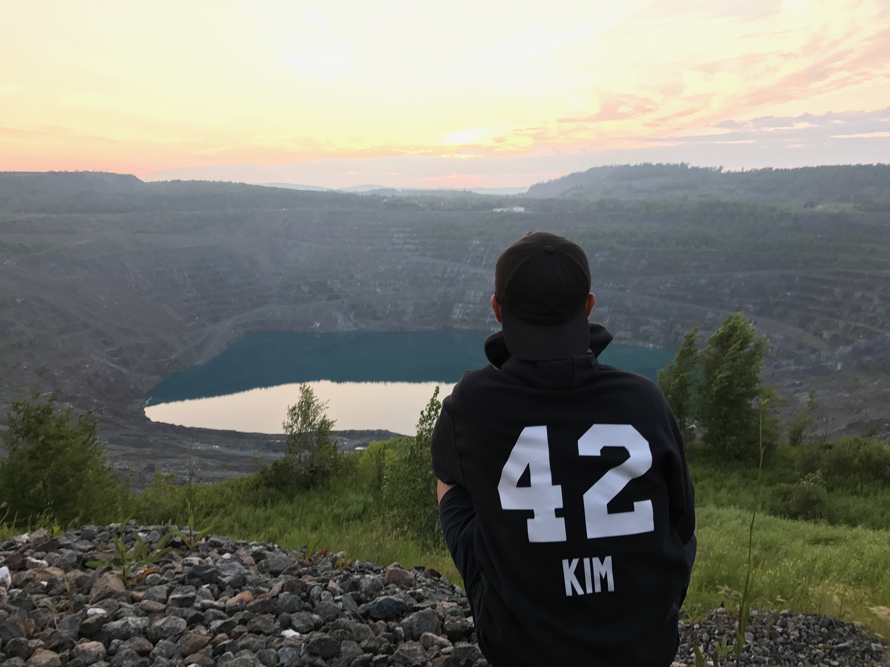

Joshua D. Kim
Focus quote:"A journey of a thousand miles begins beneath one's feet.
- Lao Tzu
Things I'm currently interested in:
- Getting this website running! (of course)
Timeline
- Jan. 4th, 2021: Added favicon made in MS Paint 3D (never doing that again) and resume.
- Dec. 28th, 2020: Started the HTML for this website.
- Dec. 24th, 2020: Learned basic command line and Git workflow
 Resume (Updated Jan. 4th, 2020)
Resume (Updated Jan. 4th, 2020)